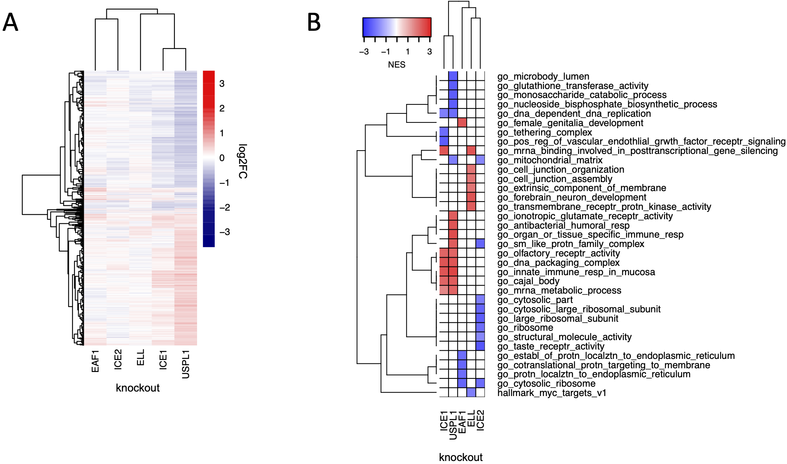

One of the most promising potential uses of DUB inhibitors is to indirectly regulate the levels of disease-associated genes that are not conventionally considered to be druggable such as transcription factors and scaffolding proteins. This strategy has been most actively pursued for USP7: inhibition of USP7 increases the levels of ubiquitinated MDM2, promoting its degradation and thereby increasing TP53 levels. A number of other DUBs besides USP7 also appear to be regulators of TP53 including UCHL3, USP38, VCPIP1, and USP42. Thus, targeting DUBs in addition to USP7 may be useful as a means to modulate TP53 levels for therapeutic benefit. This could potentially be achieved by developing a small molecule inhibitor for another TP53-regulating DUB to combine with existing selective inhibitors of USP7.
Copy number loss of USPL1 is frequent in cancer cell lines and predictive of increased sensitivity to knockout of USPL1 in the DepMap. In our hands, knockout of USPL1 gave the second strongest phenotype in terms of the number of DE genes. The strongest DepMap co-dependent genes for USPL1 across tumor types were members of the Little Elongation Complex (LEC), which is involved in transcription of spliceosomal machinery (Hutten et al., 2014) suggestive of an association between USPL1 and the LEC. To investigate these connections, we used CRISPR-Cas9 to knock out members of the LEC (ICE1, ICE2, ELL, and EAF1) in MDAMB231 cells followed by 3’DGE-seq to score phenotypes. We found that the USPL1 knockout expression signature clustered with signatures for knockout of several of the LEC genes we tested and was most similar to knockout of ICE1: in both cases upregulation of genes involved in RNA processing was observed. The high degree of similarity between the USPL1 and ICE1 knockouts is consistent with the DepMap prediction that USPL1 activity is mediated largely by the LEC. USPL1 also interacts with ICE1, ELL, and EAF1 in PPID data, suggesting there is a physical interaction between USPL1 and the LEC. Our findings are also consistent with a previous study showing that USPL1 interacts with subunits of the LEC and affects the localization of spliceosome machinery (Hutten et al., 2014; Schulz et al., 2012).
USP32 has recently been reported to be important for endosomal sorting to the Golgi apparatus via regulation of the small GTPase, RAB7 (Sapmaz et al., 2019). When we ran enrichment analysis on the top USP32 DepMap co-dependent genes, the most significant GO term was Retrograde Transport Endosome to Golgi. The co-dependent genes for USP32 include VPS52, VPS54, and RAB6A, which are proteins involved in endosomal sorting to the Golgi apparatus but RAB7 was not a codependent gene (correlation = 0.06; (Liewen et al., 2005)). This suggests that the role of USP32 in endosomal transport may be via regulation of the small GTPase RAB6A rather than RAB7. RAB6 functions in Golgi trafficking, while RAB7 acts more broadly, by associating with late endosomes and lysosomes and regulating diverse trafficking events, including directing late endosomes to the Golgi (Guerra and Bucci, 2016; White et al., 1999). USP32 is co-expressed with genes involved in retrograde endosome transport to Golgi and the vesicle tethering complex (GO: Retrograde Endosome Transport to Golgi and GO: Tethering Complex, FDR adjusted enrichment p-values 6.86 x 10-6 and 1.72 x 10-12 respectively), providing additional evidence that USP32 is involved in endosomal sorting to the Golgi apparatus.
The role of USPL1 role in the Little Elongation Complex (A) Hierarchical clustering of log2FC values of differentially expressed genes (adjusted p-value < 0.05) 96 h following knockout of USPL1, ICE1, ELL, ICE2, and EAF1 in MDAMB231. (B) Gene sets significantly enriched (FDR < 0.05) for the conditions shown in (A). The top five up- and down-regulated gene sets for each condition are shown.
